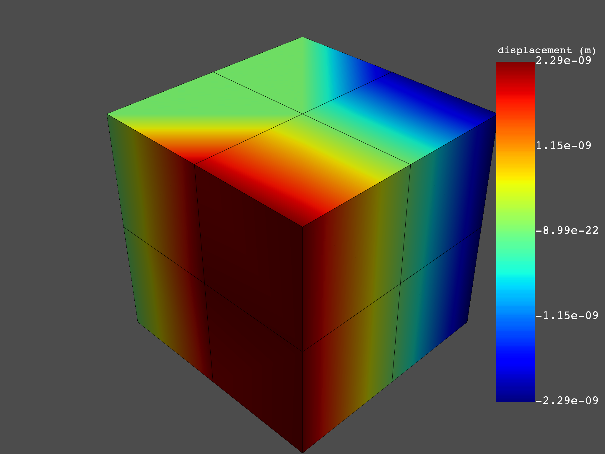
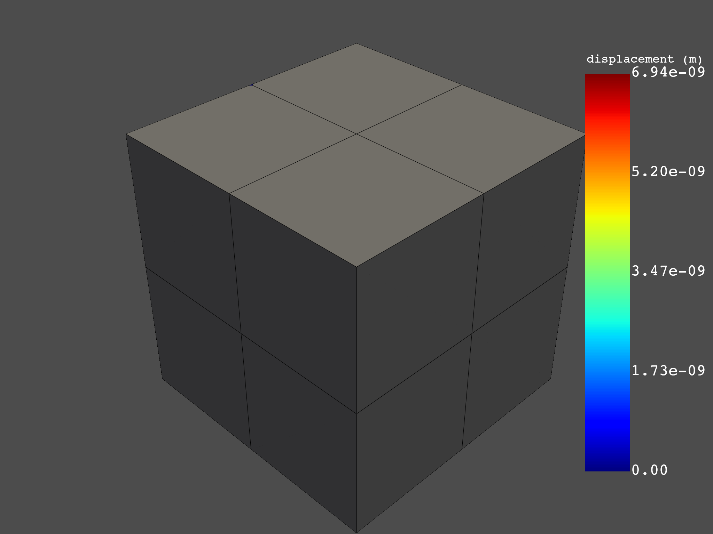
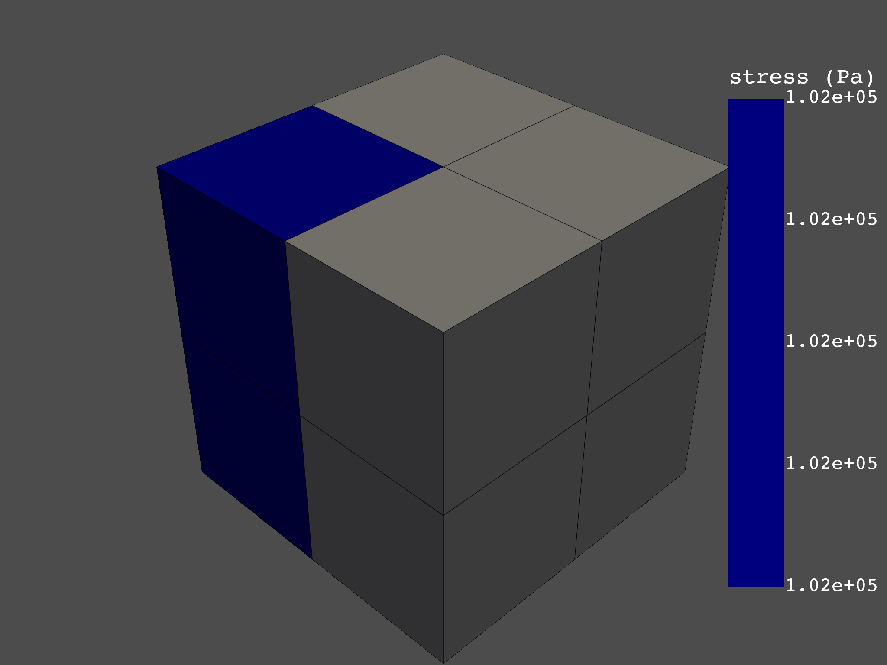

Note
Go to the end to download the full example code
Static Simulation#
In this script static simulation is processed to extract results like stress, displacement. Selecting sub parts of the results by scoping on specific nodes or elements is also displayed here.
Perform required imports#
Perform required imports. # This example uses a supplied file that you can
get by importing the DPF examples package.
from ansys.dpf import post
from ansys.dpf.post import examples
Get Simulation object#
Get the Simulation object that allows access to the result. The Simulation
object must be instantiated with the path for the result file. For example,
"C:/Users/user/my_result.rst" on Windows or "/home/user/my_result.rst"
on Linux.
example_path = examples.find_static_rst()
simulation = post.load_simulation(example_path)
# for no autocompletion, this line is equivalent to:
simulation = post.StaticMechanicalSimulation(example_path)
# print the simulation to get an overview of what's available
print(simulation)
displacement = simulation.displacement()
print(displacement)
Static Mechanical Simulation.
Data Sources
------------------------------
/opt/hostedtoolcache/Python/3.8.16/x64/lib/python3.8/site-packages/ansys/dpf/core/examples/static.rst
DPF Model
------------------------------
Static analysis
Unit system: MKS: m, kg, N, s, V, A, degC
Physics Type: Mechanical
Available results:
- displacement: Nodal Displacement
- reaction_force: Nodal Force
- stress: ElementalNodal Stress
- elemental_volume: Elemental Volume
- stiffness_matrix_energy: Elemental Energy-stiffness matrix
- artificial_hourglass_energy: Elemental Hourglass Energy
- thermal_dissipation_energy: Elemental thermal dissipation energy
- kinetic_energy: Elemental Kinetic Energy
- co_energy: Elemental co-energy
- incremental_energy: Elemental incremental energy
- elastic_strain: ElementalNodal Strain
- structural_temperature: ElementalNodal Temperature
------------------------------
DPF Meshed Region:
81 nodes
8 elements
Unit: m
With solid (3D) elements
------------------------------
DPF Time/Freq Support:
Number of sets: 1
Cumulative Time (s) LoadStep Substep
1 1.000000 1 1
results U (m)
set_ids 1
node_ids components
1 X -3.3190e-22
Y -6.9357e-09
Z -3.2862e-22
26 X 2.2303e-09
Y -7.1421e-09
Z -2.9208e-22
...
Select sub parts of displacement#
# To get X displacements
x_displacement = displacement.select(components="X")
print(x_displacement)
# equivalent to
x_displacement = simulation.displacement(components=["X"])
print(x_displacement)
# plot
x_displacement.plot()
# extract displacement on specific nodes
nodes_displacement = displacement.select(node_ids=[1, 10, 100])
nodes_displacement.plot()
# equivalent to:
nodes_displacement = simulation.displacement(node_ids=[1, 10, 100])
print(nodes_displacement)
- 
- 
results U (m)
set_ids 1
node_ids components
1 X -3.3190e-22
26 2.2303e-09
14 0.0000e+00
12 0.0000e+00
2 -3.0117e-22
27 2.0908e-09
...
results U_X (m)
set_ids 1
node_ids
1 -3.3190e-22
26 2.2303e-09
14 0.0000e+00
12 0.0000e+00
2 -3.0117e-22
27 2.0908e-09
...
results U (m)
set_ids 1
node_ids components
1 X -3.3190e-22
Y -6.9357e-09
Z -3.2862e-22
10 X 0.0000e+00
Y 0.0000e+00
Z 0.0000e+00
Compute total displacement (norm)#
Compute the norm of displacement on a selection of nodes
nodes_displacement = simulation.displacement(
node_ids=simulation.mesh.node_ids[10:], norm=True
)
print(nodes_displacement)
nodes_displacement.plot()
results U_N (m)
set_ids 1
node_ids
11 0.0000e+00
12 0.0000e+00
13 0.0000e+00
14 0.0000e+00
15 0.0000e+00
16 0.0000e+00
...
Extract tensor stress, apply averaging, compute equivalent#
Extract raw elemental nodal stresses from the rst file
elem_nodal_stress = simulation.stress()
print(elem_nodal_stress)
# Compute nodal stresses from the result file
nodal_stress = simulation.stress_nodal()
print(nodal_stress)
# Compute elemental stresses from the result file
elemental_stress = simulation.stress_elemental()
print(elemental_stress)
# Extract elemental stresses on specific elements
elemental_stress = elemental_stress.select(element_ids=[5, 6, 7])
elemental_stress.plot()
# Compute nodal eqv stresses from the result file
eqv_stress = simulation.stress_eqv_von_mises_nodal()
print(eqv_stress)
eqv_stress.plot()
- 

results S (Pa)
set_ids 1
element_ids components
5 XX (1) -3.7836e+03
YY (1) -1.2110e+05
ZZ (1) -3.7836e+03
XY (1) 5.3318e+02
YZ (1) -5.3318e+02
XZ (1) -1.4540e+02
...
results S (Pa)
set_ids 1
node_ids components
1 XX -4.8113e+03
YY -1.1280e+05
ZZ -4.8113e+03
XY 0.0000e+00
YZ 0.0000e+00
XZ 0.0000e+00
...
results S (Pa)
set_ids 1
element_ids components
5 XX -1.2071e+04
YY -1.0000e+05
ZZ -1.2071e+04
XY 3.8006e+03
YZ -3.8006e+03
XZ 4.1885e+01
...
results S_VM (Pa)
set_ids 1
node_ids
1 1.0799e+05
26 1.0460e+05
14 8.1283e+04
12 5.2324e+04
2 1.0460e+05
27 1.0006e+05
...
Total running time of the script: ( 0 minutes 6.998 seconds)